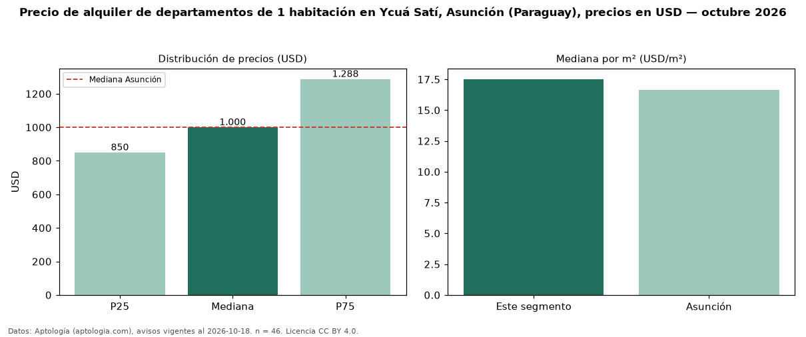

Precio de alquiler de departamentos de 1 habitación en Ycuá Satí, Asunción (Paraguay), precios en USD — octubre 2026
USD 1.000 al mes es el canon mediano de departamentos de 1 habitación en alquiler en Ycuá Satí, Asunción (Paraguay) (n = 46 avisos). Prácticamente coincide con la mediana de Asunción para departamentos de 1 habitación (USD 1.000). Por metro cuadrado, la mediana es USD 17,52/m² al mes (n = 42 avisos con área), 5 % por encima de Asunción (USD 16,67/m²). Son 26 % de los 180 avisos de departamentos en alquiler de la zona, cuya mediana general es USD 1.400 (−29 %). Con el precio por m² de venta del mismo segmento (USD 1.977/m²), la rentabilidad bruta implícita es 10,6 % anual (aproximación con medianas de ofertas distintas). El área mediana anunciada es 58 m². La mitad central de los avisos va de USD 850 a USD 1.288 (razón 1,5), una dispersión moderada. Datos: Aptología (aptologia.com), CC BY 4.0 — https://www.aptologia.com/py/alquiler/asuncion/ycua-sati. Archivos: PDF, CSV con las cifras y gráfica PNG.

| Avisos únicos | 46 |
|---|---|
| Percentil 25 | COP 850 |
| Mediana | COP 1.000 |
| Percentil 75 | COP 1.287 |
| Mediana por m² | COP 17 |
Fuente: avisos vigentes de portales inmobiliarios recopilados por Aptología, deduplicados (mínimo 30 avisos únicos por celda). Precios pedidos, no cerrados. Fecha: 2026-10-18.